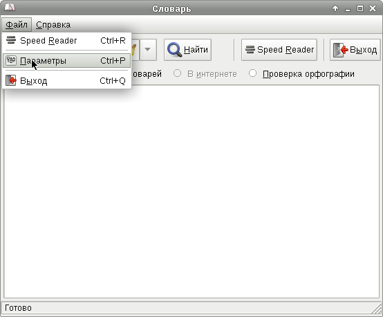
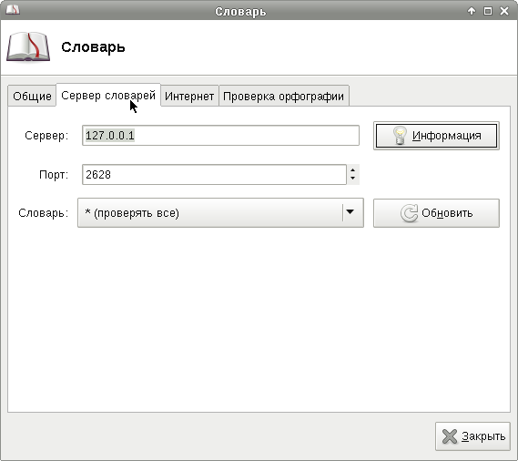
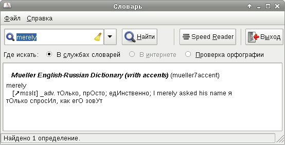

Обычно я пользуюсь онлайн-словарями Google, однако однажды я задумался о том, можно ли заниматься переводами, не имея доступа в Интернет. Из всех программ-словарей мне понравилась только одна: xfce4-dict, остальные оказались излишне тяжёлыми и прегруженными функционалом.
Итак, всё что нужно, это три пакета - сервер словарей, клиент словарей и сам англо-русский словарь:
# apt-get install dictd xfce4-dict mueller7accent-dict
Настройка тривиальна:
 Выглядит всё это следующим образом:
